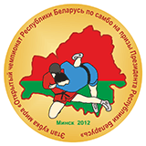

Турнир стартовал в 1997 году, а с 2008 года проходит в статусе этапа Кубка мира по самбо.
Приехать в Минск считают за честь сильнейшие самбисты планеты. И это неудивительно: уровень организации и проведения соревнований соответствует самым высоким мировым стандартам. Достойные соперники, лучшие международные арбитры, разнообразие призов и памятных подарков и, как следствие, неизменный резонанс в международных средствах массовой информации — визитная карточка турнира.